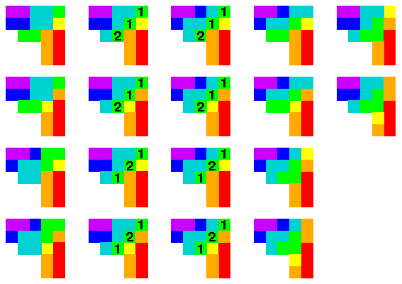

p*S2,
p*S2, p*S3,
p*S3, p*S4,
p*S4,
 p*S5,
p*S5,
 = 4 [pt]
= 4 [pt]
|
|
The picture at the left shows the four filtered tableaux corresponding to the
degree of the product
p*S2,
p*S3,
p*S4,
p*S5,
= 4 [pt]
|
, there will always be a unique Littlewood-Richardson
skew tableaux (or none) of any given shape.
In the one case where there is more than a single Littlewood-Richardson tableau,
we have written the two possibilities.
|  |
The 18 figures to the left are filtered tableaux which show that
the product
|
 |
This picture shows a way to calculate intersection number
|